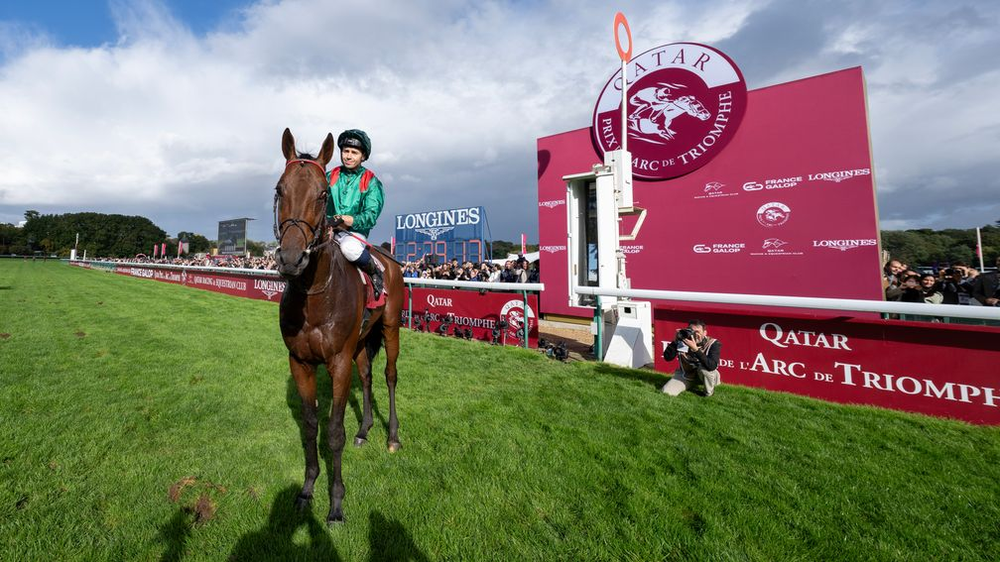

THE ROAD TO PARIS
The Daily Winner's early look at the 2026 Prix de l'Arc de Triomphe

Just when we thought Constitution Hill's extraordinary Flat adventure could not become more interesting, it has given us a route into another story. Dual Group 1 winner Bay City Roller is expected to meet Constitution Hill in Saturday's September Stakes at Kempton — but Kempton is only the stepping stone. The overriding objective is Paris on 4 October.
At the centre of the Arc picture is Daryz, last year's winner and the horse the market expects everyone else to beat. Behind him sits an increasingly fascinating group including Maltese Cross, Kalpana, Item, Bay City Roller, Thundering On and last year's runner-up Minnie Hauk.
ARC MARKET WATCH
Daryz ~3/1 · Maltese Cross ~6/1 · Kalpana ~7/1–8/1 · Item ~12/1 · Bay City Roller ~12/1–16/1 · Thundering On ~14/1 · Minnie Hauk ~16/1–20/1
The ground may become one of the defining threads. Bay City Roller's connections regard ease underfoot as important and have chosen Kempton rather than an expected good-ground Prix Foy. That makes every Longchamp weather update increasingly relevant as October approaches.
👀 ARC WATCH — BAY CITY ROLLER
Our first Road to Paris watch horse. The Coronation Cup winner has already shown top-level ability and Saturday gives us a wonderfully unusual trial: Constitution Hill versus an Arc contender. Whatever happens, we should learn something. For now this is a watch rather than an ante-post tip.
And so a new Daily Winner thread begins: Constitution Hill → Bay City Roller → the Arc. We'll return to the Road to Paris when the trials, runners, market or ground give us something worth saying.